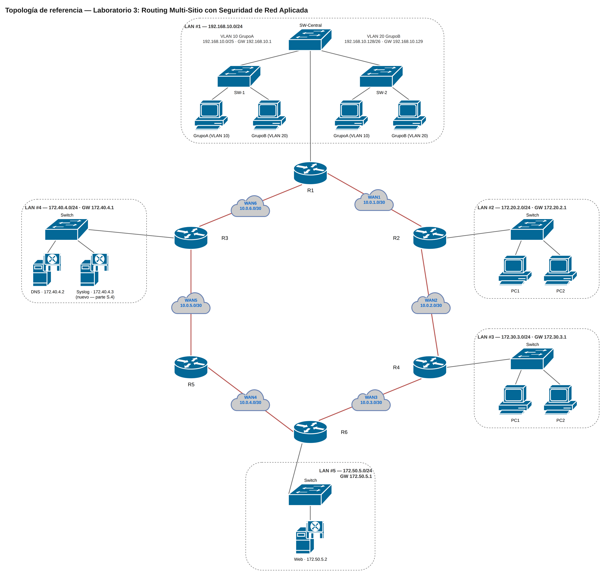

Vas a construir, desde cero en Packet Tracer, una red de 6 sitios interconectados por enlaces WAN punto a punto, con segmentación por VLANs en el sitio principal, ruteo estático completo entre todas las redes, y una capa de seguridad aplicada sobre esa infraestructura: gestión remota cifrada, control de acceso entre zonas por mínimo privilegio, protección de puertos de acceso y monitoreo centralizado por Syslog.
No es un ejercicio de routing solamente ni de seguridad solamente — es el mismo escenario que vas a encontrar en una red empresarial real: primero se hace que la red funcione (routing, direccionamiento), y después se asegura (quién puede administrar qué, quién puede llegar a dónde, y cómo te enteras si algo raro pasa).
Diseño del escenario
6 routers (R1-R6) interconectados en anillo por 6 enlaces WAN punto a punto. El Sitio 1 (LAN #1) tiene dos grupos de usuarios segmentados por VLAN; los sitios 2 a 5 son redes planas (sin VLAN) con un propósito cada una: dos sitios de usuarios (LAN2, LAN3), un sitio de servicios de red (LAN4: DNS + Syslog) y un sitio de aplicación (LAN5: servidor Web).

Figura 1. Topología del laboratorio. El archivo .pkt de Packet Tracer lo construye el estudiante como parte de la actividad.
Planificación de LAN #1 (VLSM sobre 192.168.10.0/24)
| VLAN | Nombre | Hosts necesarios | Red | Rango asignable | Gateway |
|---|---|---|---|---|---|
| 10 | GrupoA | 70 | 192.168.10.0/25 | .1 – .126 | 192.168.10.1 |
| 20 | GrupoB | 50 | 192.168.10.128/26 | .129 – .190 | 192.168.10.129 |
Planificación de LAN #2 a LAN #5 (sin VLAN, /24 cada una)
| Sitio | Red | Gateway | Propósito |
|---|---|---|---|
| LAN2 | 172.20.2.0/24 | 172.20.2.1 | Usuarios |
| LAN3 | 172.30.3.0/24 | 172.30.3.1 | Usuarios |
| LAN4 | 172.40.4.0/24 | 172.40.4.1 | DNS (.2) + Syslog (.3) |
| LAN5 | 172.50.5.0/24 | 172.50.5.1 | Servidor Web (.2) |
Planificación de las 6 WAN (enlaces /30 punto a punto)
| WAN | Red | Router | IP | Puerto |
|---|---|---|---|---|
| WAN1 | 10.0.1.0/30 | R1 | 10.0.1.1 | S0/1/1 |
| R2 | 10.0.1.2 | S0/1/1 | ||
| WAN2 | 10.0.2.0/30 | R2 | 10.0.2.1 | S0/1/0 |
| R4 | 10.0.2.2 | S0/1/0 | ||
| WAN3 | 10.0.3.0/30 | R4 | 10.0.3.1 | S0/1/1 |
| R6 | 10.0.3.2 | S0/1/1 | ||
| WAN4 | 10.0.4.0/30 | R6 | 10.0.4.1 | S0/1/0 |
| R5 | 10.0.4.2 | S0/1/0 | ||
| WAN5 | 10.0.5.0/30 | R5 | 10.0.5.1 | S0/1/1 |
| R3 | 10.0.5.2 | S0/1/1 | ||
| WAN6 | 10.0.6.0/30 | R1 | 10.0.6.1 | S0/1/0 |
| R3 | 10.0.6.2 | S0/1/0 |
g0/0/1; R1 conecta LAN #1 por g0/0/1 con dos subinterfaces (una por VLAN).
Construcción de la red
1 — Direccionamiento IP de los equipos finales
Configura IP estática en cada PC y servidor según su sitio (ver tablas de la Parte A). Todos apuntan como DNS al servidor 172.40.4.2.
2 — LAN #1: troncal y VLANs
En el switch central (modo troncal hacia SW-1 y SW-2, VLAN nativa 99):
enable
configure terminal
interface range f0/1-3
switchport mode trunk
switchport trunk native vlan 99
switchport trunk allowed vlan all
end
wrEn SW-1 y SW-2 (troncal hacia el central, VLANs de acceso hacia las PCs):
enable
configure terminal
interface f0/1
switchport mode trunk
switchport trunk native vlan 99
switchport trunk allowed vlan all
exit
vlan 10
name GrupoA
vlan 20
name GrupoB
interface range f0/2-10
switchport mode access
switchport access vlan 10
exit
interface range f0/11-20
switchport mode access
switchport access vlan 20
end
wrshow interfaces trunk en el switch central y show vlan en SW-1/SW-2.3 — Ruteo Inter-VLAN en R1
enable
configure terminal
hostname R1
interface g0/0/1
no shutdown
exit
interface g0/0/1.1
encapsulation dot1q 10
ip address 192.168.10.1 255.255.255.128
exit
interface g0/0/1.2
encapsulation dot1q 20
ip address 192.168.10.129 255.255.255.192
end
wrping 192.168.10.129 (gateway de GrupoB) debe responder — confirma el ruteo entre VLANs.4 — Interfaces WAN y LAN en cada router de borde
Configura en cada router las interfaces seriales de sus enlaces WAN (según la Parte A) y su interfaz LAN. Ejemplo con R4 (LAN3 + WAN2 + WAN3):
enable
configure terminal
hostname R4
interface g0/0/1
ip address 172.30.3.1 255.255.255.0
no shutdown
exit
interface s0/1/0
ip address 10.0.2.2 255.255.255.252
no shutdown
exit
interface s0/1/1
ip address 10.0.3.1 255.255.255.252
no shutdown
end
wrRepite el mismo patrón en R2, R3, R5 y R6 con las IPs que le correspondan según las tablas de la Parte A.
show ip interface brief en cada router — todas las interfaces usadas deben estar up/up.5 — Ruteo estático
Con routing estático se configuran manualmente, en cada router, las rutas hacia todas las redes que no están directamente conectadas.
| Router | Comandos |
|---|---|
| R1 | ip route 172.20.2.0 255.255.255.0 10.0.1.2 · ip route 10.0.2.0 255.255.255.252 10.0.1.2 · ip route 172.30.3.0 255.255.255.0 10.0.1.2 · ip route 10.0.3.0 255.255.255.252 10.0.1.2 · ip route 172.50.5.0 255.255.255.0 10.0.1.2 · ip route 172.40.4.0 255.255.255.0 10.0.6.2 · ip route 10.0.5.0 255.255.255.252 10.0.6.2 · ip route 10.0.4.0 255.255.255.252 10.0.6.2 |
| R2 | ip route 192.168.10.0 255.255.255.0 10.0.1.1 · ip route 10.0.6.0 255.255.255.252 10.0.1.1 · ip route 172.40.4.0 255.255.255.0 10.0.1.1 · ip route 10.0.5.0 255.255.255.252 10.0.1.1 · ip route 10.0.4.0 255.255.255.252 10.0.1.1 · ip route 172.30.3.0 255.255.255.0 10.0.2.2 · ip route 10.0.3.0 255.255.255.252 10.0.2.2 · ip route 172.50.5.0 255.255.255.0 10.0.2.2 |
| R3 | ip route 192.168.10.0 255.255.255.0 10.0.6.1 · ip route 10.0.1.0 255.255.255.252 10.0.6.1 · ip route 172.20.2.0 255.255.255.0 10.0.6.1 · ip route 10.0.2.0 255.255.255.252 10.0.6.1 · ip route 172.30.3.0 255.255.255.0 10.0.6.1 · ip route 10.0.4.0 255.255.255.252 10.0.5.2 · ip route 172.50.5.0 255.255.255.0 10.0.5.2 · ip route 10.0.3.0 255.255.255.252 10.0.5.2 |
| R4 | ip route 172.20.2.0 255.255.255.0 10.0.2.1 · ip route 10.0.1.0 255.255.255.252 10.0.2.1 · ip route 192.168.10.0 255.255.255.0 10.0.2.1 · ip route 10.0.6.0 255.255.255.252 10.0.2.1 · ip route 172.40.4.0 255.255.255.0 10.0.3.2 · ip route 10.0.4.0 255.255.255.252 10.0.3.2 · ip route 10.0.5.0 255.255.255.252 10.0.3.2 |
| R5 | ip route 172.40.4.0 255.255.255.0 10.0.5.1 · ip route 10.0.6.0 255.255.255.252 10.0.5.1 · ip route 192.168.10.0 255.255.255.0 10.0.5.1 · ip route 10.0.1.0 255.255.255.252 10.0.5.1 · ip route 172.20.2.0 255.255.255.0 10.0.5.1 · ip route 172.50.5.0 255.255.255.0 10.0.4.1 · ip route 10.0.3.0 255.255.255.252 10.0.4.1 · ip route 172.30.3.0 255.255.255.0 10.0.4.1 |
| R6 | ip route 172.30.3.0 255.255.255.0 10.0.3.1 · ip route 10.0.2.0 255.255.255.252 10.0.3.1 · ip route 172.20.2.0 255.255.255.0 10.0.3.1 · ip route 10.0.1.0 255.255.255.252 10.0.3.1 · ip route 192.168.10.0 255.255.255.0 10.0.3.1 · ip route 10.0.5.0 255.255.255.252 10.0.4.2 · ip route 172.40.4.0 255.255.255.0 10.0.4.2 · ip route 10.0.6.0 255.255.255.252 10.0.4.2 |
Al terminar cada router, wr y show ip route para confirmar que aparecen todas las rutas S.
ping al servidor Web (172.50.5.2) y al DNS (172.40.4.2) debe responder con 0% de pérdida (el primer paquete puede perderse por ARP, es normal — repite el ping).Seguridad aplicada
6 — Gestión remota cifrada: SSH en vez de Telnet
Por qué: Telnet manda usuario y clave en texto plano; cualquiera que capture el tráfico de gestión los ve. SSH los cifra. Es la primera regla de hardening de cualquier dispositivo de red real.
En cada router y switch (ejemplo con R1, repetir en R2-R6, Central, SW-1, SW-2):
enable
configure terminal
ip domain-name cuc-lab.local
username admin privilege 15 secret Cisco123!
crypto key generate rsa
! elegir 1024 bits cuando lo pida
line vty 0 4
transport input ssh
login local
exec-timeout 5 0
line console 0
exec-timeout 5 0
logging synchronous
enable secret Cisco123!
service password-encryption
end
wrssh -l admin <ip-destino> debe pedir la clave y entrar; telnet <ip-destino> debe ser rechazado (no hay transport input telnet).7 — Control de acceso entre zonas: ACLs de mínimo privilegio
Objetivo: GrupoB (usuarios) no necesita administrar nada — solo debe poder navegar a la Web (LAN5) y resolver DNS (LAN4). GrupoA (TI/administración) sí puede llegar a todo.
En R1:
enable
configure terminal
ip access-list extended ACL-GRUPOB
permit udp 192.168.10.128 0.0.0.63 host 172.40.4.2 eq 53
permit tcp 192.168.10.128 0.0.0.63 host 172.50.5.2 eq 80
permit tcp 192.168.10.128 0.0.0.63 host 172.50.5.2 eq 443
permit icmp 192.168.10.128 0.0.0.63 host 172.50.5.2
deny ip 192.168.10.128 0.0.0.63 172.20.2.0 0.0.0.255
deny ip 192.168.10.128 0.0.0.63 172.30.3.0 0.0.0.255
permit ip any any
exit
interface g0/0/1.2
ip access-group ACL-GRUPOB in
end
wrQué demuestra: permit ip any any al final es intencional — el punto no es bloquear todo, es bloquear específicamente lo que GrupoB no necesita (acceso a LAN2/LAN3) sin romper su navegación normal.
ping 172.50.5.2 (Web) debe responder; ping 172.20.2.2 (LAN2) debe fallar por la ACL, no por falta de ruta (compara con el resultado de una PC de GrupoA, que sí llega).8 — Port Security en los switches de acceso
Objetivo: que un puerto de acceso solo acepte la MAC del equipo que ya está conectado — si alguien desconecta la PC y conecta otro equipo (o un switch no autorizado), el puerto se bloquea.
En SW-1 y SW-2, en los puertos de acceso (f0/2 a f0/20):
enable
configure terminal
interface range f0/2-20
switchport port-security
switchport port-security maximum 1
switchport port-security mac-address sticky
switchport port-security violation shutdown
end
wrshow port-security interface f0/2 debe mostrar la MAC aprendida y el estado secure-up. Si se conecta otro equipo (MAC distinta) en ese mismo puerto, debe pasar a err-disabled.9 — Monitoreo centralizado: Syslog
Objetivo: todos los routers mandan sus logs a un solo punto, en vez de tener que revisar cada uno por separado.
- Agrega un servidor genérico ("Server-PT") en LAN4, junto al DNS existente, con IP
172.40.4.3/24. Activa el servicio Syslog en su pestaña "Services". - En cada router:
enable configure terminal logging host 172.40.4.3 logging trap informational logging on end wr
Entregable
Un solo archivo: el .pkt completo de Packet Tracer, con las 9 partes implementadas en los 6 routers y los 3 switches.
Referencias
- Cisco IOS Security Command Reference — ACLs, AAA, port security.
- Cisco — Configuring Syslog.